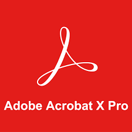
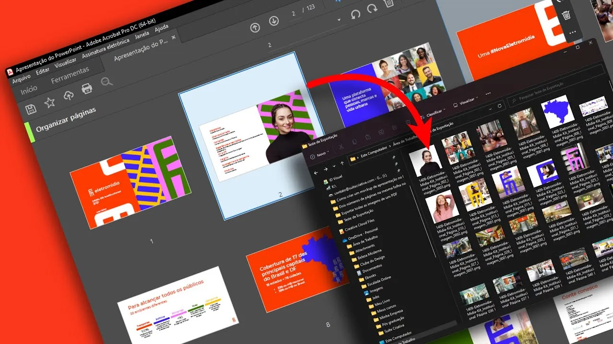
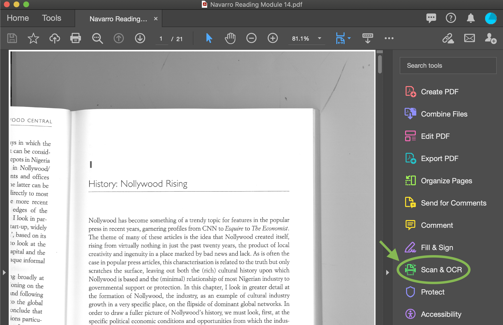

| ACROBATE PRO |
é um software desenvolvido pela Adobe, que permite a conversão de documentos de diversos formatos em um arquivo de formato PDF
|  | O software Adobe Acrobat Reader é o padrão global confiável e gratuito para exibir, imprimir, assinar, compartilhar e fazer anotações em PDFs. É o único visualizador de PDF que pode abrir e interagir com todos os tipos de conteúdo PDF, inclusive formulários e multimídia |
|  | O Acrobat Reader DC conta com versões gratuitas e pagas, tratando-se de um programa que permite a manipulação pelo usuário de documentos em PDF. |
|  | O pacote Adobe nada mais é do que o conjunto de softwares desenvolvidos pela empresa. Eles oferecem recursos que vão de uma ponta a outra, como a criação, edição e pós-produção de vídeos e imagens, por exemplo. |
| |